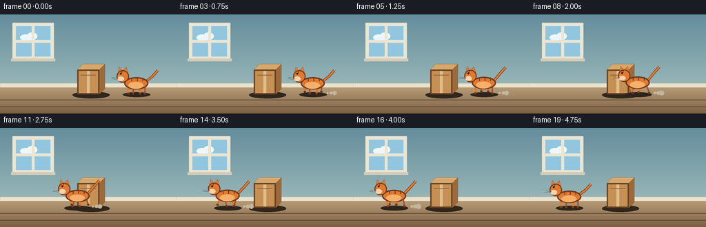
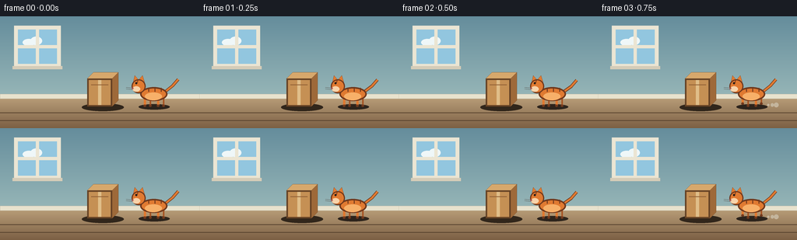

CODING AGENTS AS PIXEL WORLD MODELS
traex/Seed-2.1-Pro-0915 · dynamic_spatial_relationship_0007
点击播放 · 原生 RGB 像素
逐轮保存的候选
回放视频、检查图与代码变化。
每份候选均可单独播放。实际图片检查记录在下方工具轨迹中。
候选 01播放与检查图
点击播放 · 原生 RGB 像素


展开代码变化
--- 上一保存版本
+++ 本次保存版本
@@ -0,0 +1,240 @@
+"""Generate the five-second RGB text-to-video scene defined by prompt.txt."""
+
+from pathlib import Path
+import math
+
+import numpy as np
+from PIL import Image, ImageDraw
+
+import artifact_io
+
+
+ROOT = Path(__file__).resolve().parent
+WIDTH, HEIGHT, FRAMES, FPS = 256, 144, 20, 4.0
+SCALE = 4
+SW, SH = WIDTH * SCALE, HEIGHT * SCALE
+
+FLOOR_Y = 104
+BASELINE = 116
+BOX_LEFT, BOX_TOP, BOX_RIGHT, BOX_BOTTOM, BOX_DEPTH = 112, 80, 144, 116, 8
+START_X, END_X = 198.0, 58.0
+
+ORANGE = (224, 122, 49, 255)
+LIGHT_ORANGE = (247, 176, 105, 255)
+DARK_ORANGE = (112, 57, 29, 255)
+FAR_ORANGE = (166, 84, 35, 255)
+
+
+def sc(value):
+ return int(round(value * SCALE))
+
+
+def points(pairs):
+ return [(sc(x), sc(y)) for x, y in pairs]
+
+
+def make_background():
+ """Create a softly lit room, with the stationary box baked into the scene."""
+ wall_top = np.array([101, 141, 156], dtype=np.float32)
+ wall_bottom = np.array([170, 198, 194], dtype=np.float32)
+ floor_top = np.array([185, 158, 121], dtype=np.float32)
+ floor_bottom = np.array([124, 96, 68], dtype=np.float32)
+
+ y = np.linspace(0.0, 1.0, SH, dtype=np.float32)[:, None]
+ wall = wall_top * (1.0 - y) + wall_bottom * y
+ floor_mix = np.linspace(0.0, 1.0, SH - sc(FLOOR_Y), dtype=np.float32)[:, None]
+ floor = floor_top * (1.0 - floor_mix) + floor_bottom * floor_mix
+
+ floor_h = SH - sc(FLOOR_Y)
+ pixels = np.zeros((SH, SW, 3), dtype=np.float32)
+ pixels[: sc(FLOOR_Y)] = wall[: sc(FLOOR_Y), None, :]
+ pixels[sc(FLOOR_Y) :] = floor[:floor_h, None, :]
+ image = Image.fromarray(pixels.astype(np.uint8), "RGB").convert("RGBA")
+ draw = ImageDraw.Draw(image)
+
+ # Window and frame.
+ draw.rectangle(points([(18, 12), (78, 66)]), fill=(235, 229, 211, 255))
+ draw.rectangle(points([(23, 17), (73, 61)]), fill=(146, 198, 223, 255))
+ draw.ellipse(points([(29, 29), (45, 38)]), fill=(239, 247, 248, 215))
+ draw.ellipse(points([(39, 26), (54, 37)]), fill=(239, 247, 248, 215))
+ draw.rectangle(points([(46, 17), (50, 61)]), fill=(235, 229, 211, 255))
+ draw.rectangle(points([(23, 37), (73, 41)]), fill=(235, 229, 211, 255))
+ draw.rectangle(points([(16, 64), (80, 68)]), fill=(213, 204, 184, 255))
+
+ # Baseboard and quiet floorboard lines.
+ draw.rectangle(
+ points([(0, FLOOR_Y - 4), (WIDTH, FLOOR_Y + 2)]),
+ fill=(232, 226, 205, 255),
+ outline=(185, 176, 156, 255),
+ )
+ for line_y in (124, 134):
+ draw.line([(0, sc(line_y)), (SW, sc(line_y))], fill=(88, 67, 46, 85), width=sc(1))
+
+ # Box shadow, then a small three-dimensional cardboard box.
+ draw.ellipse(points([(105, 112), (159, 122)]), fill=(49, 38, 27, 68))
+ draw.polygon(
+ points(
+ [
+ (BOX_LEFT, BOX_TOP),
+ (BOX_LEFT + BOX_DEPTH, BOX_TOP - BOX_DEPTH),
+ (BOX_RIGHT + BOX_DEPTH, BOX_TOP - BOX_DEPTH),
+ (BOX_RIGHT, BOX_TOP),
+ ]
+ ),
+ fill=(215, 168, 108, 255),
+ outline=(105, 70, 39, 255),
+ )
+ draw.polygon(
+ points(
+ [
+ (BOX_RIGHT, BOX_TOP),
+ (BOX_RIGHT + BOX_DEPTH, BOX_TOP - BOX_DEPTH),
+ (BOX_RIGHT + BOX_DEPTH, BOX_BOTTOM - BOX_DEPTH),
+ (BOX_RIGHT, BOX_BOTTOM),
+ ]
+ ),
+ fill=(158, 105, 57, 255),
+ outline=(105, 70, 39, 255),
+ )
+ draw.rectangle(
+ points([(BOX_LEFT, BOX_TOP), (BOX_RIGHT, BOX_BOTTOM)]),
+ fill=(197, 144, 84, 255),
+ )
+ draw.rectangle(points([(126, BOX_TOP), (130, BOX_BOTTOM)]), fill=(224, 190, 137, 255))
+ draw.rectangle(
+ points([(BOX_LEFT, BOX_TOP), (BOX_RIGHT, BOX_BOTTOM)]),
+ outline=(101, 66, 37, 255),
+ width=sc(2),
+ )
+ draw.line(points([(BOX_LEFT + 5, BOX_TOP + 8), (BOX_RIGHT - 5, BOX_TOP + 8)]),
+ fill=(143, 94, 52, 255), width=sc(1))
+ return image
+
+
+def draw_dust(draw, cx, phase):
+ for index in range(3):
+ life = (phase * 0.23 + index * 0.34) % 1.0
+ x = cx + 21 + life * 15
+ y = BASELINE - 2
+ radius = 1.4 + life * 2.4
+ alpha = int(62 * (1.0 - life))
+ draw.ellipse(
+ points([(x - radius, y - radius), (x + radius, y + radius)]),
+ fill=(196, 181, 157, alpha),
+ )
+
+
+def draw_cat(image, cx, frame_index, moving, phase):
+ draw = ImageDraw.Draw(image)
+ bob = -1.4 * abs(math.sin(phase * 2.0)) if moving else 0.0
+ by = BASELINE + bob
+
+ draw.ellipse(points([(cx - 20, BASELINE - 3), (cx + 20, BASELINE + 4)]),
+ fill=(45, 36, 28, 55))
+ if moving:
+ draw_dust(draw, cx, phase)
+
+ # Far legs first, then near legs; diagonal legs share a gait phase.
+ leg_data = [
+ (-12, 0.0, True),
+ (-5, math.pi, False),
+ (5, math.pi, True),
+ (12, 0.0, False),
+ ]
+ for near_first in (False, True):
+ for x_offset, gait_offset, near in leg_data:
+ if near != near_first:
+ continue
+ angle = phase + gait_offset
+ swing = 4.6 * math.sin(angle) if moving else 0.0
+ lift = max(0.0, 2.8 * math.cos(angle)) if moving else 0.0
+ top = (cx + x_offset + swing * 0.25, by - 10)
+ foot = (cx + x_offset + swing, by - 1 - lift)
+ color = ORANGE if near else FAR_ORANGE
+ draw.line(points([top, foot]), fill=color, width=sc(3 if near else 2))
+ draw.ellipse(
+ points([(foot[0] - 1.8, foot[1] - 1.5), (foot[0] + 1.8, foot[1] + 1.5)]),
+ fill=DARK_ORANGE,
+ )
+
+ # Tail, drawn before the body so its root disappears naturally.
+ wag = (4.0 * math.sin(phase * 1.35)) if moving else 1.4 * math.sin(frame_index * 0.35)
+ tail = [
+ (cx + 14, by - 19),
+ (cx + 24, by - 27 + wag),
+ (cx + 31, by - 35 + wag),
+ ]
+ draw.line(points(tail), fill=DARK_ORANGE, width=sc(4), joint="curve")
+ draw.line(points(tail), fill=ORANGE, width=sc(2.5), joint="curve")
+
+ # Body and belly.
+ draw.ellipse(
+ points([(cx - 18, by - 25), (cx + 17, by - 7)]),
+ fill=ORANGE,
+ outline=DARK_ORANGE,
+ width=sc(2),
+ )
+ draw.ellipse(points([(cx - 12, by - 18), (cx + 10, by - 8)]), fill=LIGHT_ORANGE)
+ for stripe_x in (-7, 1, 9):
+ draw.line(
+ points([(cx + stripe_x, by - 24), (cx + stripe_x, by - 19)]),
+ fill=DARK_ORANGE,
+ width=sc(1.2),
+ )
+
+ # Head in left-facing profile.
+ hx, hy = cx - 20, by - 26
+ draw.polygon(
+ points([(hx - 7, hy - 5), (hx - 5, hy - 14), (hx + 1, hy - 7)]),
+ fill=ORANGE,
+ outline=DARK_ORANGE,
+ )
+ draw.polygon(
+ points([(hx - 1, hy - 7), (hx + 5, hy - 14), (hx + 8, hy - 4)]),
+ fill=ORANGE,
+ outline=DARK_ORANGE,
+ )
+ draw.ellipse(
+ points([(hx - 9, hy - 9), (hx + 9, hy + 9)]),
+ fill=ORANGE,
+ outline=DARK_ORANGE,
+ width=sc(1.5),
+ )
+ draw.ellipse(points([(hx - 8, hy), (hx + 2, hy + 7)]), fill=(248, 211, 170, 255))
+ draw.ellipse(points([(hx - 4.2, hy - 5.2), (hx - 1.7, hy - 2.7)]), fill=(35, 27, 23, 255))
+ draw.polygon(points([(hx - 9, hy + 1), (hx - 6, hy + 2.5), (hx - 8.5, hy + 4)]),
+ fill=(171, 77, 77, 255))
+ for whisker_y in (hy + 2.5, hy + 4.5):
+ draw.line(points([(hx - 7, whisker_y), (hx - 16, whisker_y - 1)]),
+ fill=(65, 48, 38, 255), width=sc(0.55))
+ draw.line(points([(hx - 1, hy - 8), (hx - 2, hy - 4)]),
+ fill=DARK_ORANGE, width=sc(1))
+
+
+def cat_state(frame_index):
+ if frame_index < 3:
+ return START_X, 0.0, False
+ if frame_index >= 17:
+ return END_X, 0.0, False
+ t = (frame_index - 3) / (17 - 3)
+ smooth = t * t * (3.0 - 2.0 * t)
+ x = START_X + (END_X - START_X) * smooth
+ return x, (frame_index - 3) * 1.65, True
+
+
+def main():
+ background = make_background()
+ frames = []
+ for frame_index in range(FRAMES):
+ frame = background.copy()
+ cx, phase, moving = cat_state(frame_index)
+ draw_cat(frame, cx, frame_index, moving, phase)
+ frames.append(np.asarray(frame.convert("RGB").resize((WIDTH, HEIGHT), Image.Resampling.LANCZOS)))
+
+ frames = np.stack(frames).astype(np.uint8)
+ artifact_io.save(frames, ROOT)
+ print(f"Saved {FRAMES} RGB frames ({WIDTH}x{HEIGHT}) to {ROOT}")
+
+
+if __name__ == "__main__":
+ main()
可观测工具轨迹
实际执行的命令与返回图片。
命令 1exit 0
/bin/bash -lc 'ls -la && cat prompt.txt && echo "---" && cat task_spec.json && echo "---" && cat GENERATION_RULES.md'
命令 2exit 0
/bin/bash -lc "sed -n '1,240p' artifact_io.py && sed -n '1,220p' player_template.html"
命令 3exit 1
/bin/bash -lc 'python generate.py'
命令 4exit 0
/bin/bash -lc 'python generate.py && find . -maxdepth 2 -type f | sort'
保存候选 1 份；完成命令 4 次；可验证图片返回 0 张。原始 API 响应与完整日志保留在本地。